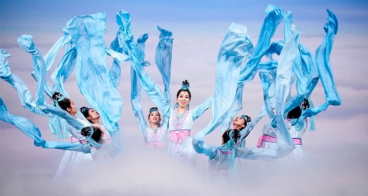
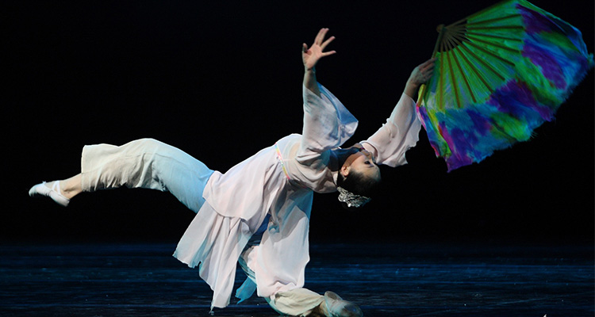
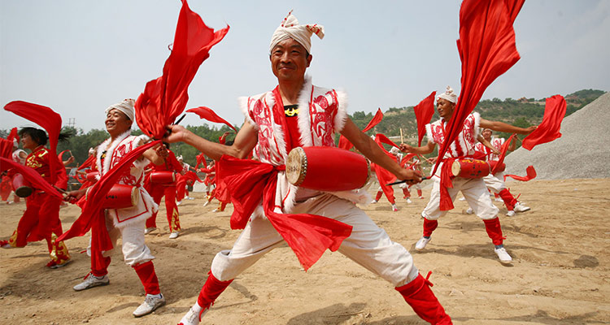
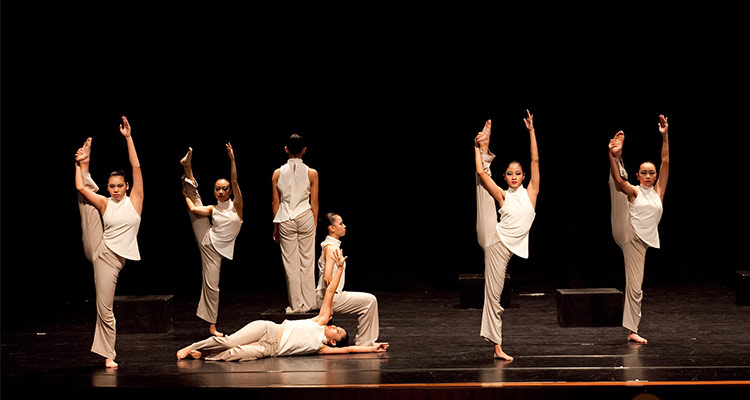
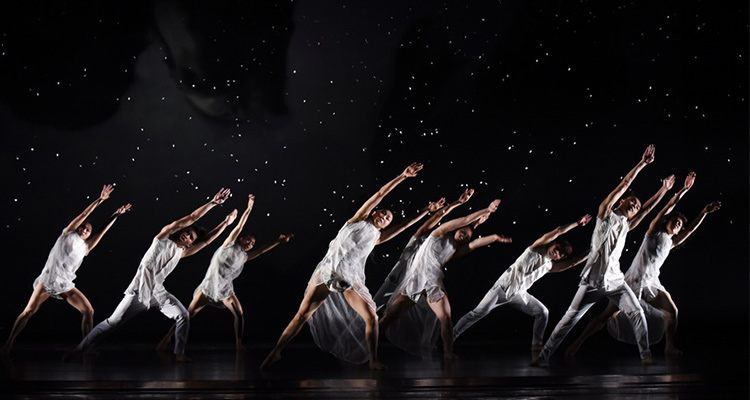

舞蹈,它通过人的肢体,展示出“动的艺术” 舞蹈既是肢体语言,也是生命灵动的绘画。每年的4月29日便是世界舞蹈日，始于1982年，由国际舞蹈委员会最先提出。这个日期是为了纪念法国现代芭蕾舞之父乔治·诺韦尔并增进这项被称为“超越文化语言界限的肢体艺术”在世界各国间的传播而设立。
舞，作为传承至今的一种文化形态，自古就有诗句流传。“罗袖动香香不已，红蕖袅袅秋烟里。轻云岭上乍摇风，嫩柳池边初拂水。”透过诗句，仿佛看到那踏节的盘和鼓已经摆好，舞人从容而舞，形舒意广。她的心遨游在无垠的太空，自由地远思长想。开始的动作，像是俯身，又像是仰望；像是来、又像是往。是那样的雍容不迫，又是那么不已的惆怅，实难用语言来形象。接着舞下去，像是飞翔，又像步行；像是辣立，又像斜倾。不经意的动作也决不失法度，手眼身法都应着鼓声。纤细的罗衣从风飘舞，缭绕的长袖左右交横。络绎不绝的姿态飞舞散开，曲折的身段手脚合并。
根据舞蹈的作用和目的划分，舞蹈可分为生活舞蹈和艺术舞蹈（表演舞蹈）两大类。表演舞蹈又根据不同风格特点分为:古典舞，民间舞，现代舞和当代舞四类。
1、古典舞。是在民族民间传统舞的基础上长期提炼而来，具有严谨的程式，规范性的动作和比较高超的技巧。 世界各国各民族的古典舞风格都不同。我国汉族的古典舞动作大多保存在戏曲舞蹈中。细腻圆润，刚柔并济，情意交融，技艺结合。注重精气神。
2、民间舞。是由劳动人民发展，直接反映人民群众的生活思想，世界各国各民族的民间舞还是尽不相同的。我国很多民间舞常常是自娱性和表演性的统一，特点是舞蹈与歌唱的紧密结合，自由活泼载歌载舞。
3、现代舞。是在西方兴起的舞蹈流派，主要美学观点是反对古典芭蕾的因循守旧，脱离现实和单纯追求技巧的形式主义倾向。主张摆脱芭蕾过于僵化的动作程式的束缚，以合乎自然的运动法则的舞蹈动作，自由抒发人的真实情感，强调舞蹈艺术要反映现代社会生活。欧美有很多流派，我很喜欢现代舞。
4、当代舞。就是在新中国建立后，当代舞蹈家们根据当代的社会人文创作，并选择的吸收融合运用古典舞，民间舞，现代舞的表现手法和表现方法，从而出来的新的风格。
1、如果有机会的话，可以尝试去观赏芭蕾舞剧，你会体会到不一样的精彩哦；
2、周末也可以去跟朋友们High一High，在舞池里释放一周工作的压力来给自己减压哦~